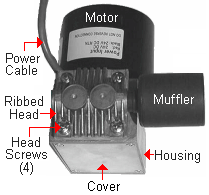
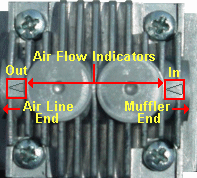
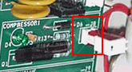
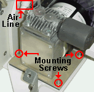
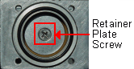
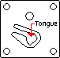
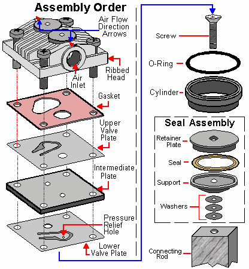
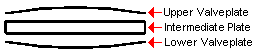
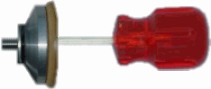

This procedure describes how to remove, disassemble, clean internal parts or install replacement parts, reassemble, and reinstall the KNF compressor.
Required Materials (for repair):
Compressor Repair Kit (See the DxI Parts List for repair kit part number.): Gasket, piston seal, o-ring
This document provides instructions for performing these operations on the KNF compressor:
Removing
Disassembling
Installing replacement parts
Reassembling
Reinstalling
Perform this repair procedure after troubleshooting the compressed air system and determining that the compressor does not provide adequate air pressure.
Reference Graphics:


Perform this cleaning procedure when the KNF compressor has failed internally.
Caution: When handling the internal compressor parts, do not touch the surface with your bare skin. Handle the valve plates, intermediate plate, and head only by their edges.
Note:
The best solution to acquiring compressed air is to install the House Air Kit.
Compressors, no matter what type or brand, can require periodic maintenance or replacement.
When changing the seals, check the valve plates for damage (bent tongues, corrosion).
Remove the compressor
Remove power to the compressor using the switch on the Power Distribution PCB labeled "All DC power (except CPU and reagent coolers)".
Remove the left rear cover from the instrument.
Remove the drip cover on the lower cabinet interface PCB.
Disconnect the compressor power connector J8 from the lower cabinet interface PCB.

Remove the compressor mounting bracket (three screws).

Disconnect the air line to the compressor.
Lift the compressor out of the instrument.
Disassemble the compressor.
Perform these steps carefully because there are many parts in the compressor. All parts must be accounted for.
Grasp the muffler and remove it by rotating it counterclockwise.
Remove the cover plate (four screws).
Remove the ribbed head (four screws), and lift the ribbed head off the housing.
Remove the gasket, valve plates, and intermediate plate from the housing.
Some of the parts can stick to the ribbed head, and some parts can stick to the compressor.
Remove the black o-ring. Grasp the counterweight, and then rotate the counterweight until the connecting rod is at top center.
Grasp and hold the connecting rod, and then loosen and remove the retainer plate screw.

Remove all the parts that were held in place by the retainer plate screw.
Caution: Perform these steps carefully because there are many parts in the compressor and all parts must be accounted for. There can be as many as nine washers (shims) that need to be reinstalled.
Remove the piston seal from the retainer plate.
Inspect all the parts, and verify that the parts are clean of all dirt and debris. If they are not clean, clean them.
Inspect all the KNF compressor internal parts, and verify that the parts are clean of all dirt and debris. If they are not clean, clean them.
Note: Handle the internal parts only by their edges.
Carefully clean and remove all seal particles, using methanol or alcohol and a lint free cloth, from the valve plates, intermediate plate, and all other parts with seal particles.
Caution: Do not damage the tongue area of the valve plates.

Reassemble the compressor.

Insert the cylinder into the housing (larger OD upward).
Stack the retainer plate, replacement seal, support, and washers (shims), onto the screw in the correct order. Refer to the seal assembly in the drawing for the exact order.
Caution: The valve plates have a minor curvature to them and must be installed correctly. Lay the valve plates on a flat surface, and examine them to determine which way the plates curve.
Caution: Perform these steps carefully because there are many parts in the compressor and all parts must be accounted for. There can be as many as nine washers (shims) that need to be reinstalled.
Caution: Assemble the pump correctly, to prevent improper pump operation.


Insert a Philips screwdriver into the screw, and hold the assembly vertically with the screw pointing upward using the screwdriver.
Rotate the counterweight until the connecting rod is up fully. Grasp the pump with your other hand, and then rotate the housing so that the connecting rod is horizontal. Rotate the seal to the horizontal with the screw-end facing the connecting rod, and then carefully insert the seal (with the screwdriver in the screw) through the cylinder.
Tighten the screw into the connecting rod.
Set the compressor down with the seal area facing upward.
Assemble the remaining parts in the order shown. Stack the parts on top of the cylinder and o-ring. Refer to the assembly drawing. Orientation of parts is critical to correct operation.
Assemble the replacement o-ring.
Assemble the upper valve plate.
Assemble the lower valve plate.
Assemble the replacement gasket.
Assemble the ribbed head. The W-mark must line up with the W-marks on the intermediate plate and housing.
Insert the four screws into the ribbed head, and then carefully tighten the screws.
Caution: The ribbed head must sit squarely on the cylinder and o-ring. Improper tightening causes the o-ring to leak. Each screw must be tightened only a small amount at a time. Tighten a screw a small amount, and then move to an opposite corner and tighten that screw a small amount.
Install the four screws into the cover plate.
Reinstall the compressor.
Set the pump into the instrument, and then connect the power cable to J8.
Power on the compressor using the switch on the Power Distribution PCB labeled "All DC power (except CPU and reagent coolers)".
Pre-test the compressor before proceeding, by holding your finger over the intake port and verifying that the air is entering the intake port. If air is exiting the intake port or entering the output port, the compressor is not assembled correctly.
Power off the compressor using the switch on the Power Distribution PCB.
Return to the Disassemble the compressor step and repeat this procedure until the compressor passes the pretest.
Attach the muffler to the intake port.
Place the compressor into the instrument on top of the rubber vibration pad.
Secure the compressor-mounting bracket (three screws).
Connect the air line to the compressor.
Caution: Verify that the tubing is not kinked.
Connect the compressor power connector to the lower cabinet interface PCB J8.
Replace the drip cover on the lower cabinet interface PCB.
Install the lower right rear instrument cover.
Restore power to the motors by using the switch on the Power Distribution PCB labeled "All DC power (except CPU and reagent coolers)".
Verify the proper operation of the compressor.
Initialize the instrument, and select
Clean out all positions and
Remap.
This exercise of all the pneumatics devices verifies that the compressor is operational.
Verify that the secondary pressure regulator is set to 20 psi.
After initialization is complete, check to see if compressor is running.
If the compressor powers on, allow it to pump until it powers off.
If the system calls for the compressor to power on, and the compressor does not do so, then there is a major air leak in the tubing or a fitting or the pump is defective or assembled incorrectly. Determine the cause of the failure and repair it. Verify that the compressor obtains maximum pressure and then powers off.
Note: The pump should power off between 34 psi and 35 psi and power on when the pressure drops below 32 psi.
SelectDiagnostics > Device Diagnostics > Analog Devices > Analog Data and view the Air Compressor value to monitor the system pressure.
Check for air leaks by monitoring the pressure level obtained after initialization for 1 minute. Verify that the pump does not start during that time.
The compressor must remain off for 1 minute or more between cycles.
If the off-time is one minute or more, the compressed air system is not leaking. This check is complete.
If the off-time is less than one minute, there is a leak that must be located and repaired. After repairing the leak, repeat the pressure check.
Verify system operation.
Perform system verification as stated in the Verification of Service Repair document .